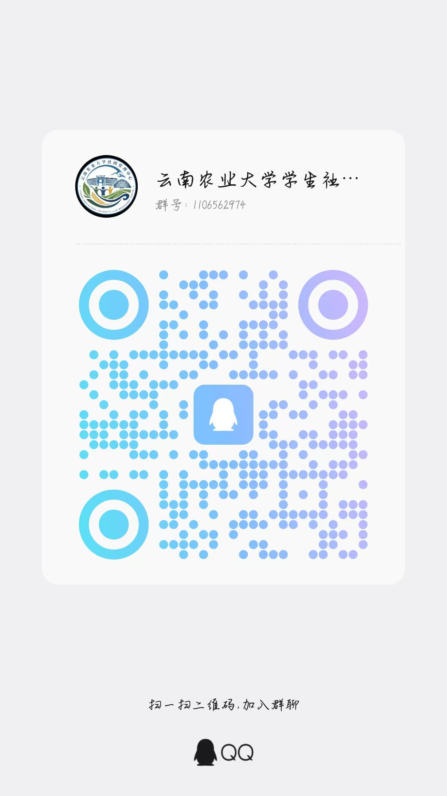
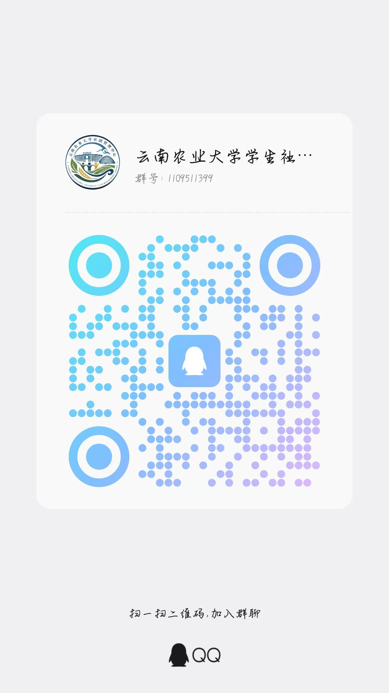

补充志愿时长
及时了解校内外志愿服务机会，按活动要求报名参与，积累志愿服务时长。
云南农业大学 · 社团公益志愿者群
你可以获得什么
及时了解校内外志愿服务机会，按活动要求报名参与，积累志愿服务时长。
需要补充实践学分或了解相关活动要求时，可在群内关注通知并咨询活动安排。
后续有志愿服务活动时，群内会发布招募通知、报名方式、服务时间和注意事项。
加入群聊
请使用 QQ 扫描二维码加入群聊。进群后请留意群公告和活动通知，按要求报名参加志愿服务。
目前设有 1 群和 2 群两个群均可加入，请选择一个扫码进群。
活动名额、服务时长及实践学分认定以具体活动通知为准。

